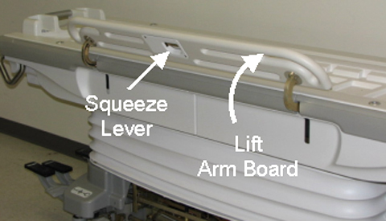
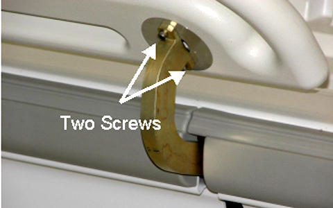
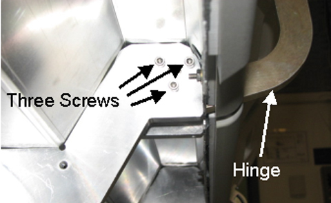
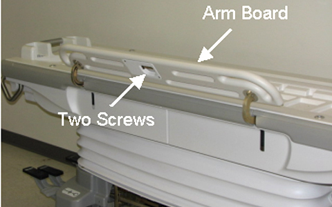
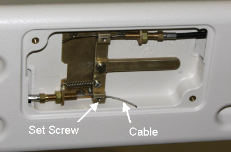
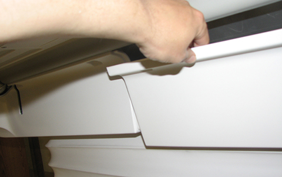
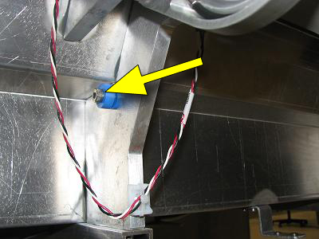

Operating Documentation
Direction 5670006, Rev# 1
Discovery MR750w GEM Service Methods
Module Version 6.0, Version Date 7/13/11
Operating Documentation |
| Required Persons | Preliminary Reqs | Procedure | Finalization |
|---|---|---|---|
| 1 | Not Applicable | 90 mins |
| Item | Qty | Effectivity | Part# | Manufacturer | |
|---|---|---|---|---|---|
| Non-Magnetic Service Tool Kit | 1 | - | 5112581 | - | |
| Item | Qty | Effectivity | Part# | Manufacturer |
|---|---|---|---|---|
| Loctite 242 (10 cc) | 1 | - | - | - |
| Item | Qty | Effectivity | Part# | Manufacturer | |
|---|---|---|---|---|---|
| Right Rear and Left Front Arm Board Hinge | 1 | - | See FRU Manual. | - | |
| Left Rear and Right Front Arm Board Hinge | 1 | - | See FRU Manual. | - | |
| Shoulder Screw, 1/4 in-20 x 1/2. ss 18-8 | 1 | - | See FRU Manual | - | |
Undock the Patient Table and remove table from the scan room to perform work.
Move the arm board on the table into the up position by squeezing the lever on the underside and lifting up. (Shown below.)
Illustration 1: Lifting Up Arm Board

Remove the upper side covers nearest the hinge to be removed. (See Touch and Go Strip and Side Bumper Replacement.)
Using the short tip Allen wrench (to access inner screw), remove two screws attaching the hinge to the arm board. (Shown below.)
Illustration 2: Two Upper Hinge Screws

Using the short tip Allen wrench (to access inner screw), remove three screws attaching the hinge to the table. (Shown below.)
Illustration 3: Three Lower Hinge Screws

Using a flathead screwdriver, remove the two screws from the lever mechanism cover under the arm board. (Shown below.)
Illustration 4: Lever Mechanism Screws

Loosen the setscrew securing the cable to the lever mechanism and remove the cable to allow the hinge mechanism to be removed completely. (Shown below.)
Illustration 5: Lever Mechanism Cable

Insert the new assembly through the arm board and thread the cable into the sheath and wrap as shown making sure that it is tight enough to actuate.
Reattach the arm board hinge to the table with three lower hinge screws. (Shown below.)
Illustration 6: Three Lower Hinge Screws
After applying a small amount of Loctite 242 to each upper hinge screw, reattach the arm board hinge to the attaching the arm board with the two upper hinge screws. (Shown below.)
Illustration 7: Two Upper Hinge Screws
Check the functionality of the lever and make sure that the arm board can be moved up and down.
Install the upper side covers nearest the hinge. (See Touch and Go Strip and Side Bumper Replacement.)
Return table to scan room.
Undock the Patient Table and remove it from the scan room to perform work.
Unscrew the Upper Left Rear Cover. This section removal requires unscrewing the section from both the bellows and the Table. (Shown below.)
Illustration 8: Table Covers

| ||||
| Do not position cover in a manner that places stress on the plastic. | ||||
Once unfastened, the Upper Left Rear Cover can be placed out of the way by sliding around handle. (Shown below.)
Illustration 9: Upper Cover Removal

Locate the bumper shoulder screw and replace as needed. (Shown below.) Apply Loctite when reinstalling.
Illustration 10: Bumper Shoulder Screw

Reverse the previous steps for reassembly.
Dock Table and verify proper operation from Operator Console.